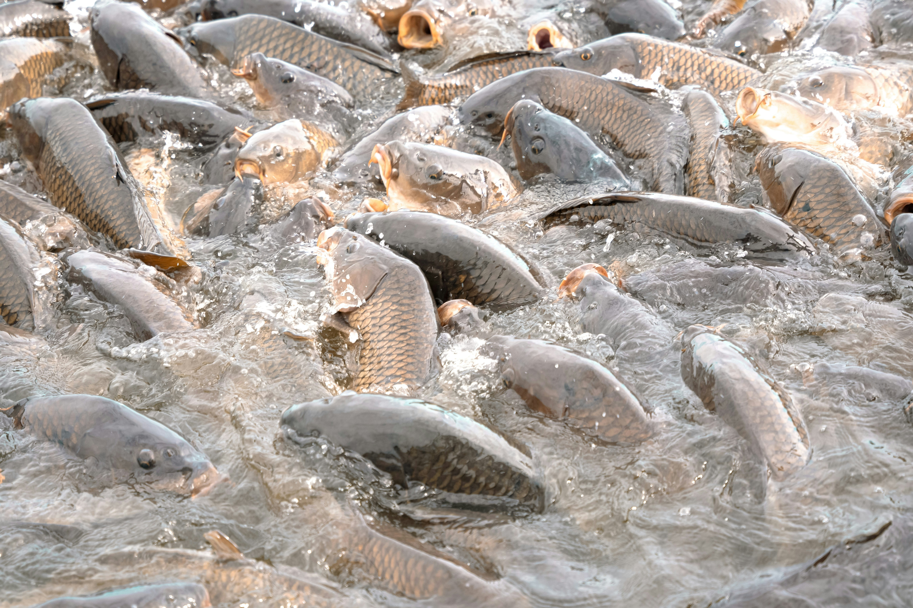

Nutra® 0
Alevinage · 0–5 g
Alevinage 0–5 g
DécouvrirUne gamme complète de granulés flottants pour chaque stade du cycle tilapia — alevinage, prégrossissement, grossissement et finition — accompagnée par nos techniciens et disponible en Côte d'Ivoire.

Techniciens MARIDAV sur le terrain : plans de rationnement par stade, suivi qualité d'eau et accompagnement du cycle alevin à l'abattage.
De l'écloserie à la finition — Nutra pour l'alevinage et le prégrossissement, Optiline pour le grossissement et la finition, AquaCare pour la qualité d'eau.
Stock disponible en Côte d'Ivoire, devis en FCFA sous 24 h et appui technique sur le terrain.
Profish — concentré protéique marin — pour renforcer vos formulations maison et maîtriser le coût de la ration.
Un cycle linéaire guidé par le poids du poisson : de l'écloserie à l'abattage, chaque stade a son aliment. Repère = poids en grammes.
Nutra 0 : granulé micro-extrudé haute digestibilité pour démarrer les alevins dès les premières heures.
Nutra® 0Nutra 80 : profil amino équilibré pour croissance homogène et faible encrassement des bassins.
Nutra® 80Nutra 120 : qualité constante lot à lot pour conduire la phase de prégrossissement vers 80 g.
Nutra® 120Nutra 160 : dernière étape Nutra, profil proche d'Optiline pour une bascule sans stress.
Nutra® 160Optiline 2 : granulé 2,5–3 mm pour démarrer le grossissement avec vitamines et antioxydants renforcés.
Optiline® 2Optiline 3 : granulé 3–4 mm pour la phase centrale du grossissement.
Optiline® 3Optiline 4.5 : granulé 4–5 mm pour préparer les lots à l'abattage et au marché.
Optiline® 4.5Toute la gamme pisciculture, prête à l'emploi comme en fabrication assistée.
Alevinage · 0–5 g
Alevinage 0–5 g
DécouvrirAlevinage · 5–20 g
Alevinage 5–20 g
DécouvrirPrégrossissement · 20–80 g
Prégrossissement 20–80 g
DécouvrirPrégrossissement · 80–120 g
Prégrossissement 80–120 g
DécouvrirGrossissement · 120–200 g
Grossissement 120–200 g
DécouvrirGrossissement · 200–400 g
Grossissement 200–400 g
DécouvrirFinition · > 400 g
Finition > 400 g
DécouvrirReproducteurs · Broodstock
Reproducteurs tilapia
DécouvrirConcentré protéique · FAF
Protéine FAF
DécouvrirAucun produit dans cette sélection.
Additif qualité d'eau — flore bénéfique et enzymes pour limiter l'encrassement organique et stabiliser le milieu d'élevage.
DécouvrirRésultats chiffrés (FCR, poids/âge, taux de ponte) et références d'élevages communiqués par nos techniciens, selon votre conduite d'élevage.
Parlez à un technicien MARIDAV : il cadre la formulation et le devis avec vous.